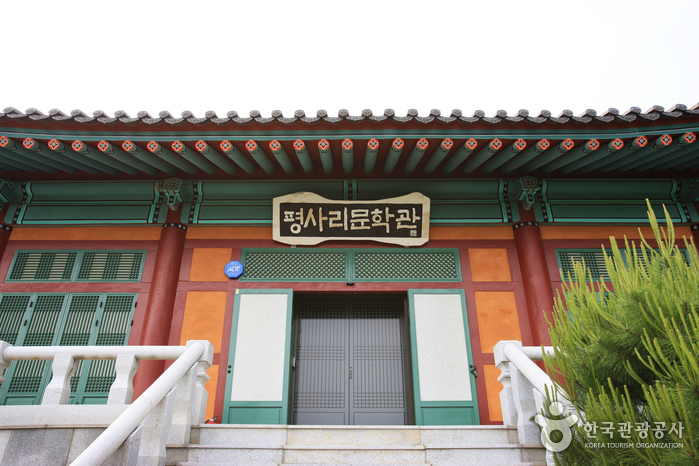
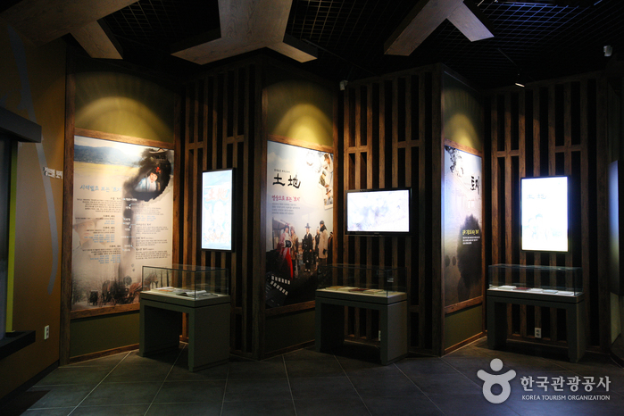
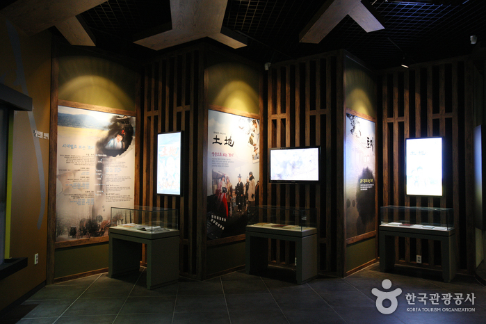
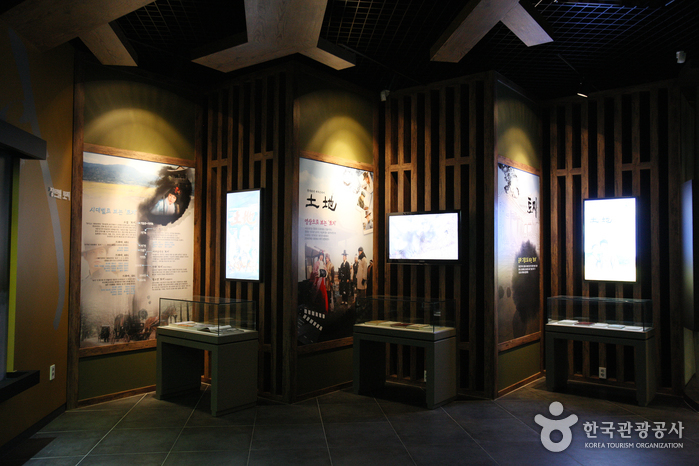

평사리문학관


지역 : 경남 하동
설명 : 소설 '토지'를 테마로 꾸며진 곳으로 박경리의 작품과 일대기를 느낄 수 있는 문학관.
웹사이트 링크 1:
http://cafe.daum.net/noveltoji
웹사이트 링크 2:
https://place.map.kakao.com/8121640
웹사이트 링크 3:
https://goo.gl/maps/dyHukmiZAC9fTSpc8
 
